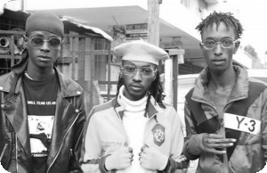

 The Boondocks Gang unit is composed of Bobby aka Ex-Ray, Frank aka Odi wa Murang’a and Edward aka Maddox, three ambitious rappers whose club-bangers such as Mathogothanio, Mboko Haram and Rieng Remix have become the craze among Pulsers. “Rieng Remix was the main project that propelled us into the limelight, and we give a major shout-out to Kristoff, Vdj Jones and Rankadda for the opportunity,” says Ex-Ray. “But our journey actually started during a drama project when I met with Maddox and later we joined hands with Odi wa Murang’a since our chemistry was in-sync, and from then we started singing. Back then we were doing gospel music but later we realised that we were well-versed with the Gengetone sound and message. That is when we jumped ship. The gospel music industry was full of hypocrisy and couldn’t work since we wanted to be real and reflect it in our music and that’s how we settled on Gengetone,” Ex-Ray explains. “We officially formed the group last year and since we were all doing different genres we decided to bring them together and make a new wave. We do street music, which nowadays actually sells and people are supportive. But in as much as we try to school these whack-jobs we still appreciate the old artistes but again, honestly speaking, their time is up,” adds Maddox.
The young stars, who seemingly sent the old stars into early retirement by taking over the streets and the ghetto fans - the highest consumers of Gengetone music, are currently working on new tracks under the label. They are all 'balling' in a small space but with time they will prove their mettle and rule the nest. They say they have no bad blood with anyone in the industry and they would very much appreciate working with Khaligraph Jones, Sauti Sol and Nyashinski.